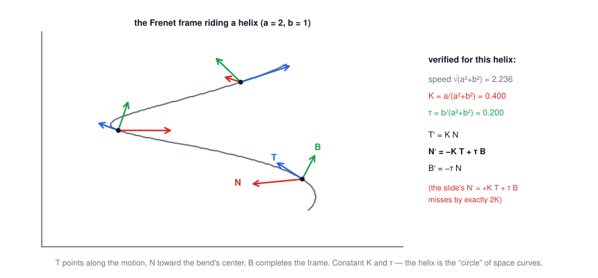
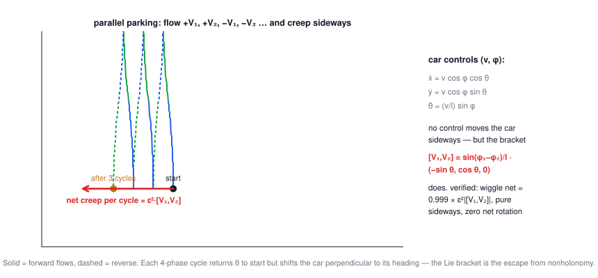

Lecture 14: Differential Geometry
CSE 276C, Lecture 14 · Prof. Henrik Christensen · do Carmo / O'Neill. All numbers verified in
scripts/lec14/verify.py.The big picture
Lecture 12 said C-spaces are manifolds; this lecture supplies the calculus that lives on them. Two storylines: along a curve (velocity → arc length → curvature → the moving Frenet frame) and across vector fields (covariant derivative → Lie bracket → why nonholonomic robots can still go everywhere). Both end in robot facts you can verify with numbers.
| robotics problem | differential-geometry tool |
|---|---|
| how sharply can the path turn at this speed? | curvature K, radius R = 1/K |
| jerk-free road/path design | clothoids: K(s) linear in s |
| attach a tool frame that follows a weld seam | the Frenet frame (T, N, B) |
| parallel parking a nonholonomic car | the Lie bracket of control fields |
| orientations, poses, Gaussians as "spaces" | manifolds and charts |
1 · Curves, traces, parameterizations
A curve is a map \(\alpha : I \to \mathbb R^3\), \(\alpha(t) = (x(t), y(t), z(t))\), smooth (all derivatives exist). Distinguish the curve (the map, with its timing) from its trace (the set of points): \((r\cos\theta, r\sin\theta)\) on \([0, 2\pi]\) and \((r\cos 2\theta, r\sin 2\theta)\) on \([0, \pi]\) draw the same circle at different speeds — same trace, different curves. For robots: the path is the trace; the trajectory is the curve.
2 · Arc length & unit speed
$$v(t) = \lVert \alpha'(t) \rVert, \qquad s(t) = \int_{t_0}^{t} v(\tau)\, d\tau$$Re-parameterize by s and the curve runs at unit speed — β(s) with \(\lVert\beta'\rVert = 1\) — which makes every later formula clean: geometry stops being entangled with how fast you happened to drive. (Fine print the slides enjoy: not every curve has finite arc length — the Koch snowflake's perimeter diverges. Robot paths are tamer.)
3 · Curvature
$$K(s) = \lVert \beta''(s) \rVert, \qquad R(s) = \frac{1}{K(s)}$$At unit speed, the second derivative can't change the speed — only the direction — so its size is pure turning rate. Verified anchors: a line has K = 0; a circle of radius a has K = 1/a everywhere; the clothoid (Cornu spiral) has K(s) = s — curvature growing linearly with distance, i.e. a steering wheel turned at constant rate, which is why roads, rail transitions, and robot path smoothers use it (K never jumps ⟹ lateral acceleration never jumps). All three verified numerically.
🕹️ Try it: ride four curves at unit speed and watch the osculating circle breathe:
4 · The Frenet frame & its formulas
At each point of a unit-speed curve, build an orthonormal frame out of the motion itself:
$$T = \beta' \ \ (\text{tangent}), \qquad N = \frac{T'}{\lVert T'\rVert} \ \ (\text{normal — toward the bend}), \qquad B = T \times N \ \ (\text{binormal})$$T and N span the osculating plane (the plane the curve locally lives in); B is its normal. Two scalars drive everything: curvature \(K = \lVert T' \rVert\) and torsion \(\tau = -B'\cdot N\), which measures how fast the curve twists out of the osculating plane. The frame's evolution is the Frenet formulas:
$$T' = K N, \qquad N' = -K\,T + \tau B, \qquad B' = -\tau N$$The derivation is three applications of one lemma: if \(f\cdot g\) is constant then \(f'\cdot g = -f\cdot g'\) (so any unit field is ⊥ its own derivative). Curvature is always ≥ 0; torsion is signed; neither depends on the parameterization.
5 · Worked fully: the helix
\(\alpha(t) = (a\cos t, a\sin t, bt)\) with a = 2, b = 1 — every claim verified:
| quantity | formula | value |
|---|---|---|
| speed | \(\sqrt{a^2+b^2} = c\) (constant) | 2.236 |
| arc-length reparam | \(\beta(s) = \alpha(s/c)\), unit speed ✓ | — |
| curvature | \(K = a/(a^2+b^2)\) | 0.400 (constant) |
| torsion | \(\tau = b/(a^2+b^2)\) | 0.200 (constant) |
Constant K and τ make the helix the "straight line" of twisted curves — and b → 0 recovers the circle (τ = 0, K = 1/a); a → 0 kills the curvature. The slide's torsion formula prints its numerator cut off — it is b.

6 · Covariant derivatives
$$(\nabla_V W)(p) = \frac{d}{dt} W(p + t\,V_p)\Big|_{t=0}$$"How does the field W change as I move along V?" — a directional derivative of one vector field along another (computationally: the Jacobian of W times V). Verified on the slides' own examples: constant fields give 0; for the radial field \(W = (x,y)/r\) and the tangential field \(V = (-y,x)/r\) on the plane, \(\nabla_V W = V/r\) (walking around the circle, the radial direction rotates toward V) and \(\nabla_W V = 0\) (walking outward, the tangential direction doesn't change). It is linear in both slots and function-linear in the direction slot.
7 · The Lie bracket & parallel parking
$$[V, W] = \nabla_V W - \nabla_W V$$The bracket measures the failure of flows to commute: go along V, then W, then back along each — the tiny loop doesn't close, and its defect points along [V, W]. The lecture's showpiece is the car \( (x, y, \theta)\) with controls (v, φ):
$$\dot x = v\cos\phi\cos\theta,\quad \dot y = v\cos\phi\sin\theta,\quad \dot\theta = \tfrac{v}{l}\sin\phi$$No control produces sideways motion \((-\sin\theta, \cos\theta, 0)\) — that's the nonholonomic constraint. But for two steering angles the bracket of the control fields is, verified to 10⁻¹²:
$$[V_1, V_2] = \frac{\sin(\phi_1 - \phi_2)}{l}\,(-\sin\theta,\ \cos\theta,\ 0)$$exactly the forbidden sideways direction. And it's physical: flowing ε along \(+V_1, +V_2, -V_1, -V_2\) displaces the car by ε²[V₁,V₂] — measured ratio 0.999, pure sideways, zero net rotation. Parallel parking is the Lie bracket, and \([\,\cdot,\cdot\,] \neq 0\) is why 2 controls reach all 3 degrees of freedom (as long as φ₁ ≠ φ₂ — equal angles kill the bracket and the maneuver).

🕹️ Try it: wiggle the car; then set φ₁ = φ₂ and watch the bracket die:
8 · Manifolds, charts, diffeomorphisms
A smooth manifold is a set M with a family of 1-1 charts \(\phi: U \subset \mathbb R^m \to M\) — coordinate systems that make M locally look like ℝᵐ. A diffeomorphism is a smooth 1-1 map with smooth inverse (Inverse Function Theorem: \(\det J_x f \neq 0\) ⟺ local diffeomorphism — Lecture 2's Jacobian rank test again). Robotics examples from the slides, verified where numeric:
- Gaussians form a manifold: global chart (μ, Σ) ∈ ℝⁿ × 𝒫(n) — "the space of beliefs" a filter moves through.
- The sphere needs ≥ 2 charts: stereographic projection \(\phi(P) = \big(\frac{x}{1-z}, \frac{y}{1-z}\big)\) covers everything but the north pole (roundtrip verified to 10⁻¹⁶; |φ| → ∞ as z → 1 — Lecture 12's chart-singularity story with its formula filled in).
- Möbius strip and torus: explicit parameterizations; the torus (u, v) chart is Lecture 12's joint-angle square wearing its 3-D embedding.
9 · Summary
- Separate trace from parameterization; arc length is the honest clock, and unit speed makes \(\lVert\beta''\rVert\) pure geometry: curvature.
- The Frenet frame (T, N, B) is a moving coordinate system built from the motion; K bends it in-plane, τ twists it out — with the skew-symmetric rate equations T′ = KN, N′ = −KT + τB, B′ = −τN.
- Helix: K = a/(a²+b²) = 0.4, τ = b/(a²+b²) = 0.2, both constant. Clothoid: K = s, the jerk-free transition curve.
- ∇_V W differentiates fields along fields; [V,W] = ∇_V W − ∇_W V measures non-commuting flows.
- The parking theorem of the course: [V₁,V₂] = sin(φ₁−φ₂)/l · (sideways) — verified in formula and by integrating the actual maneuver (ratio 0.999). Nonholonomy is a constraint on velocities, not on destinations.
- Manifolds = sets with charts; singular charts ≠ singular spaces; robotics lives on ℝⁿ, Sⁿ, SO(3), SE(3), Tⁿ and the Gaussian manifold.
⚠️ Typos in the slides to watch out for
- N′(s) slide: "\(N'(s) = K(s)T(s) + \tau(s)B(s)\)" and the Frenet-matrix entry (1,2) = +K — both need −K. Verified: the minus version holds to 10⁻¹⁰ on the helix; the printed version misses by exactly 2K, and the printed matrix isn't skew-symmetric (a rotating orthonormal frame's rate matrix must be). The same deck's line-form Frenet formulas two slides later print the minus correctly.
- Same slide block: "Given K(s) = N(s)·T′(s), it must be true that N′(s)·T(s) = −K(s)" is correct — it contradicts the +K line just above it.
- Helix example slide: the torsion formula's numerator is missing/cut off — it is \(\tau = \frac{b}{a^2+b^2}\) (verified 0.200 for a = 2, b = 1).
- Frenet-frame slide: "called the Fernet Frame" → Frenet (twice; Fernet is a liqueur).
- Manifolds slide: "Manifolds requiring multiple chartss" → charts; sphere definition prints \(\mathcal S^2 = \{(x, y, x)\ldots\}\) → the third coordinate is z.
- Covariant-derivative properties: "\(\nabla_{fV+gU} W = f\nabla_V W + g\nabla_u W\)" — the last subscript should be U (capital), i.e. \(g\nabla_U W\).